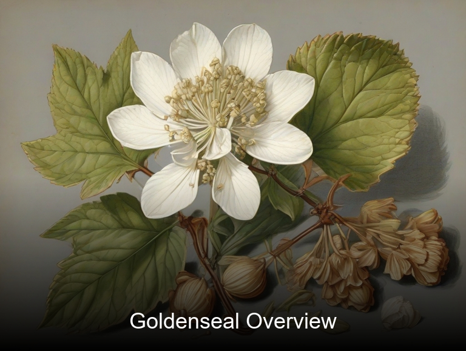
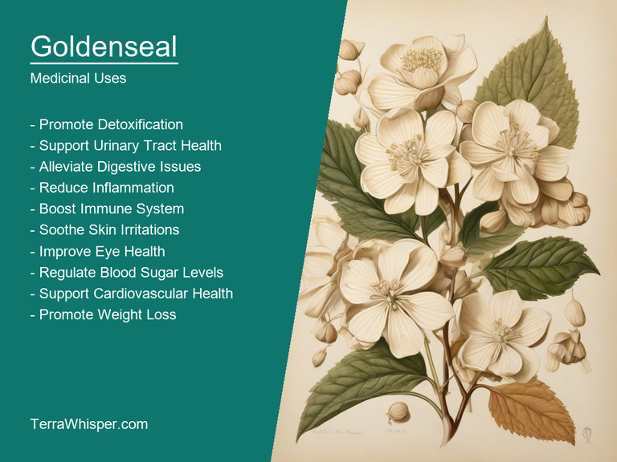
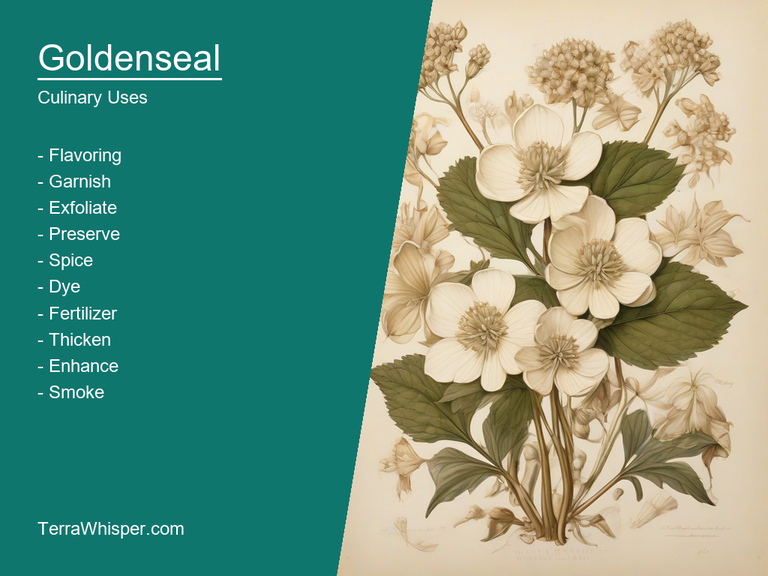
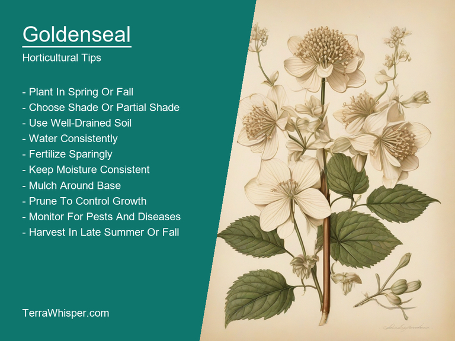
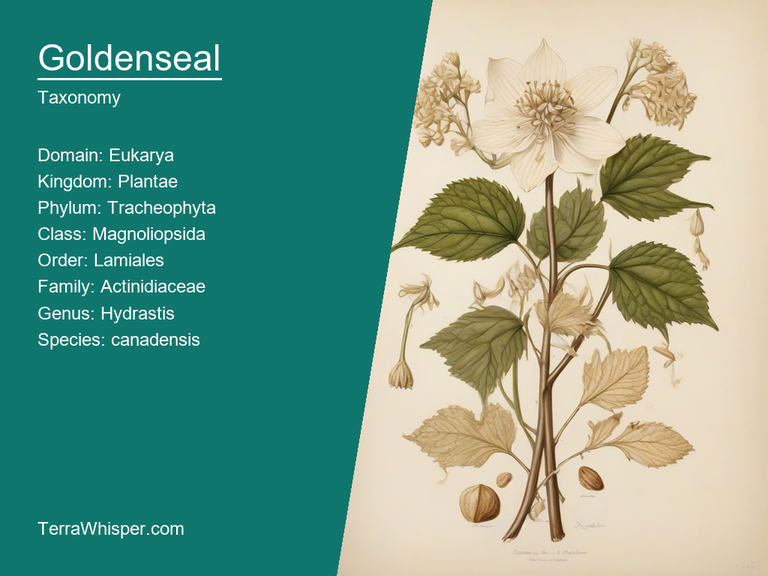
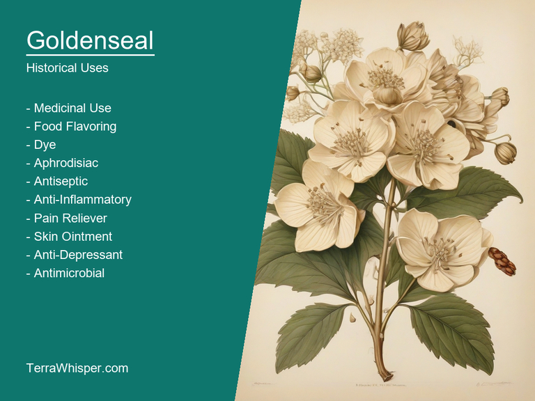

Goldenseal, scientifically known as Hydrastis canadensis, is a perennial herbaceous plant native to North America. It has been used for centuries in traditional medicine for its numerous medicinal properties. It was a common remedy among Native Americans and early settlers for various health issues such as colds, stomach ailments, and skin conditions. The plant's roots contain alkaloids like berberine which give it potent antibacterial and antifungal abilities. In addition to its medicinal uses, Goldenseal is known for its culinary applications. Its rhizomes are sometimes used as a substitute for ginger in cooking due to their slightly bitter and spicy taste with earthy undertones.
Goldenseal is also valued for its horticultural attributes which make it an attractive addition to landscaping and ornamental gardens. The plant's foliage has a beautiful glossy appearance, featuring large, heart-shaped leaves in dark green tones that are accentuated by the plant's rich burgundy flower blooms during springtime. Goldenseal is considered low-maintenance and adaptable to various soil conditions, making it suitable for growing in wooded areas and partially shaded spots within a garden or around native ecosystems where it can thrive.
As an intriguing botanical specimen, Goldenseal's historical background dates back centuries. The plant has been documented by various herbalists and naturalists throughout history, including John Bartram, the father of American botany, who recorded his observations in the 1700s. Its unique appearance and medicinal properties have inspired many studies into its chemical composition and potential health benefits. Goldenseal's popularity has also led to conservation concerns, as overharvesting and habitat destruction have threatened its populations in some regions of North America. It is now considered a vulnerable species under the IUCN Red List of Threatened Species and various efforts are being made to protect it for future generations to appreciate both its beauty and its potential benefits to human health.
In this article, you will discover what are the medicinal and culinary uses of goldenseal. Then, you'll learn how to cultivate it, what is its botanical profile, and how it was used historically.
Goldenseal (Hydrastis canadensis) has many health benefits, such as aiding digestion, supporting liver function, and providing relief from respiratory issues. This remarkable herbal plant is known to help in treating various conditions, including diarrhea, intestinal gas, stomach ulcers, urinary tract infections, inflammation, and eye irritations. It works efficiently on skin problems like eczema and psoriasis due to its anti-inflammatory properties. Goldenseal is also used in naturopathic medicine as a potent natural antibiotic for treating bacterial infections, thanks to its high content of berberine alkaloids.
The following illustration lists the most important uses of goldenseal in medicine.

The health benefits provided by Goldenseal are primarily attributed to the presence of certain bioactive compounds found in different parts of the plant. The most important constituents include isoquinoline alkaloids like berberine, canadine, and hydrastine, which have potent antimicrobial, anti-inflammatory, and antioxidant effects on our body. These compounds are found in the rhizome or underground stem of Goldenseal, as well as the plant's roots and leaves.
The two parts mostly utilized to prepare medicinal preparations from Goldenseal include the root and the rhizome (underground stem). Herbal extracts made from these components are often used as capsules, tinctures, tea blends, or ointments for topical application. These herbal preparations offer a safe and effective alternative to chemical drugs for treating various health issues.
While Goldenseal offers numerous health benefits, it is essential to be aware of potential side effects that may arise from its use. One major concern is the plant's ability to cause skin irritation in some people if used topically or ingested in large amounts. Additionally, the long-term use of Goldenseal may lead to digestive problems, liver damage, and blood clotting issues due to its high content of berberine alkaloids.
To ensure safety when using Goldenseal for medicinal purposes, it is crucial to follow proper precautions. Consult a healthcare professional or a qualified herbalist before starting any new supplement regimen. People with certain medical conditions, such as liver disease, ulcers, and bleeding disorders, should use Goldenseal with caution or avoid it altogether. Moreover, pregnant or lactating women, young children, and people who have allergies to other plants in the family (such as buttercups) are generally advised to avoid using Goldenseal.
Goldenseal is a unique plant with various culinary applications, especially in terms of flavor enhancement and garnishing dishes. As for the plant's uses, it is employed primarily as a seasoning agent, while also finding some culinary value in its aesthetic qualities.
The following illustration lists the most common uses of goldenseal for culinary purposes.

The flavor profile of Goldenseal can be described as earthy, bitter, and slightly sweet with hints of mint or cinnamon depending on the preparation method. This distinctive taste makes it an ideal complement to a wide range of dishes, including soups, stews, sauces, and marinades.
The edible parts of Goldenseal include its roots, rhizomes, and berries. While the root is usually more readily available in stores for culinary use, all parts can be utilized to add depth and complexity to a dish. The root should preferably be harvested during the fall season when it contains higher alkaloids and essential oils that are important to its flavor profile.
When incorporating Goldenseal into recipes, consider using it sparingly as its strong flavors can easily overpower other ingredients. For example, a pinch of ground root or powder can be added to various stews, soups, and broths for an earthy undertone. The plant's vibrant roots and berries can also be used to garnish plates as colorful accents, while the aromatic qualities add an additional layer of complexity to any dish.
While Goldenseal is generally safe for culinary use when consumed in small amounts, it is essential to be cautious due to possible side effects and toxicity in excessively large doses or prolonged consumption. In some individuals, Goldenseal may cause stomach upset, nausea, and allergic reactions. It is always recommended to consult with a healthcare professional before incorporating Goldenseal into one's diet regularly.
Goldenseal (Hydrastis canadensis) is a perennial herb native to the forests of eastern North America, where it thrives under partial shade and moist soil conditions in forest clearings or along streams. The plant grows best in acidic to neutral pH soils with a range of 5.0-7.5 and reaches about 20-40 cm (8-16 inches) in height, producing white flowers during springtime.
The following illustration lists the most important tips to cutlitvate goldenseal.

For optimal growth, Goldenseal should be planted in well-drained soil. Providing the plant with partial shade or protection from direct sunlight is essential for its healthy development. It's recommended to plant seeds directly into the ground or propagate by dividing established clumps in early spring or fall when the temperature drops. When establishing plants, it's important to space them at least 30-50 cm (12-20 inches) apart to allow for proper growth and development without crowding each other out.
Caring for Goldenseal involves regular watering during dry periods throughout spring to early fall. This will ensure that the plant maintains a steady supply of moisture, which is essential for its health and continued production of berries and rhizomes. Fertilizing may be needed once every few years with an organic, slow-release fertilizer. The soil should be kept slightly acidic, within a pH range of 4.0-5.5 to maintain optimal conditions.
Harvesting Goldenseal is typically conducted once plants reach maturity at around two or more years of age, and it's important not to overharvest the plant as this can lead to its decline in population. The best time for harvesting is during late summer when the berries are ripe and easily separated from their stalks. Carefully dig up the rhizomes with a garden fork or trowel, being cautious not to damage the surrounding roots. Rhizomes can then be dried out in a cool, well-ventilated area before being stored for future use.
Pests and diseases are not common issues for Goldenseal, but they might be prone to leaf spot caused by fungal pathogens or insect infestations such as spider mites or aphids. To minimize these problems, maintain good plant health through proper care and avoid overcrowding the area.
Goldenseal, with botanical name Hydrastis canadensis, belongs to the domain Eukarya, kingdom Plantae, phylum Magnoliophyta, class Magnoliopsida, order Ranunculales, family Ranunculaceae, genus Hydrastis, and species Hydrastis canadensis. Common names include American Goldenseal, Orange Root, Yellow Pucca, Yellow Root, and Yellow Spleenwort.
The following illustration display the botanical profile of goldenseal.

There are several variants named Blue, Green, Red, White, and Yellow Goldenseal with slight differences in their appearance due to the color of their roots. The Blue variant has a bluish root, while the Green one's root is green. The Red variant has a reddish-brown root, and the White Goldenseal features a white rhizome.
This perennial plant grows wildly in forests throughout North America and some parts of Europe. It can also be found in the understory of deciduous and evergreen hardwoods as well as coniferous forests. The habitats include shady woodlands, damp and moist areas, and rich, fertile soil.
Goldenseal is a herbaceous plant with alternate leaves that are divided into three to five leaflets. Its yellowish green or pinkish flowers appear in springtime and grow on an erect flowering stem. The most prominent feature of this plant is its underground rhizome, which can vary in color from white to blue, red, green, or even purple, depending on the variant.
As a perennial herb, Goldenseal has a complex life-cycle that involves a mix of vegetative and reproductive phases. It reproduces both sexually and asexually through seeds and rhizome production. The plant propagates via rhizomes, which give rise to new plants, contributing to its ability to spread in the wild.
Goldenseal, scientifically known as Hydrastis canadensis, has a long and varied history across different cultures. The plant is primarily found in North America and holds deep cultural significance to the Native Americans who used it extensively for its medicinal properties. In traditional medicine, Goldenseal was believed to have various healing effects on diverse body systems, such as the respiratory system, digestive system, and reproductive system. It was often used to treat colds, flu, asthma, and other respiratory conditions. For stomach issues like indigestion or heartburn, Goldenseal aided in balancing digestion, while it also served as an effective remedy for urinary tract infections. Additionally, it was utilized to combat sexual diseases, especially those affecting the reproductive system of both men and women.
The following illustration lists the most well known historical uses of goldenseal.

Apart from its traditional medicinal uses, Goldenseal was a prized resource among indigenous people who used it for divination purposes. They believed the roots or dried powder had special powers that could be channeled through rituals to foretell the future, communicate with spirits, and reveal hidden knowledge. The plant possessed metaphysical properties that allowed shamans and other spiritual leaders to interpret the meaning behind its presence during healing rituals or ceremonies. This mystic significance gave Goldenseal an aura of sacredness in Native American culture, where it was not only valued for its healing powers but also as a tool for understanding life's deeper mysteries.
Lastly, the plant has inspired several legends that weave tales around its unique properties and mysterious origins. One such story is about how Goldenseal came to be. According to these accounts, it was once a common sight in the forest, but as humans learned about its medicinal uses, they began overharvesting it for their own needs. As a result, only few survived where new, golden ones started emerging and were said to have been blessed by Mother Nature herself to keep the plant's healing power alive despite the abuse inflicted upon it. This myth also illustrates how people's appreciation and fascination with Goldenseal has led to various legends and interpretations about this captivating plant.